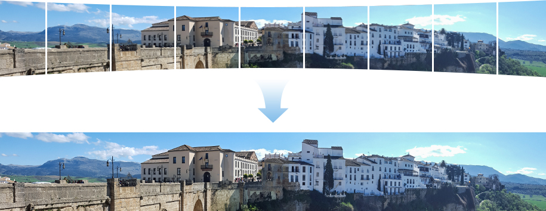

CS205 Computing Foundations for Computational Science Final Project
Group 4: Weihang Zhang, Xuefeng Peng, Jiacheng Shi and Ziqi Guo
Harvard University, Spring 2018
In this project, we want to use big compute techniques to parallelize the algorithms of image stitching, so that we can stream videos from adjascent camera into a single panoramic view.
Image stitching or photo stitching is the process of combining multiple photographic images with overlapping fields of view to produce a segmented panorama or high-resolution image (example below).

Image stitching is a rather complicated application in computer vision. It is composed of several key stages, some of which involve heavy computation. We will give an intuitive explanation of each of the key procedures below. Please follow the links provided for more technical details, and please refer to the Design Approach section for a complexity profiling of these tasks.
As a first step, keypoints on the two images you want to stitch together need to be identified. These keypoints usually correspond to the most distinguish features of an image, such as corners and edges of an object. There are several famous algorithms that dedicately achieve this task, including Harris Corner Detection, Scale Invariant Feature Transform (SIFT) and Speed-Up Robust Features (SURF). SIFT and SURF are the state-of-the-art due to their robustness.
Not only do these algorithms identify the keypoints, they will also generate a descriptor vector for each of the keypoints. These descriptors will capture information about the keypoints' location, orientation and relation to their surroundings.
After keypoint detection, each image will have a set of keypoints together with their descriptor vectors. We will then need to establish matching relations between these descriptors. Most methods are based on Euclidean distance between descriptors. For each keypoint in image 1, if its best match is significantly better than the second best match, than we consider the best match valid.
Once we have establish matching keypoints between images, we want to estimate a transformation matrix H that will be used to warp the image. Normally, Random Sample Consensus (RANSAC) will be used to derive reliable transformation matrix after removing false matches. The algorithm basically iteratively try out different match combinations and only keep the one that is the best-fitting to the matches.
With the transformation matrix, we can project the image to the right to the plane that the image to the left is at. This is called warping.
Finally, we have the original image 1, and the warped image 2. We can stitch them together by placing pixels from both images on a blank canvas.
Border blending is to smooth out the differences in light and hue across the stitching seam, so that the stitched image can look more homogeneous.
The key idea of our project is to focus on the word ‘real-time’. Although there are existing algorithms for the application, doing it in ‘real-time’ can still be challenging.
Imagine the scenario where we need a real-time panorama streaming view, this would require the backend application to stitch the view of different cameras together frame by frame. For a laggy video of 5 frames per second, we will need processing time of at most 0.2 seconds for each pair of images. This would be very difficult to achieve with regular computational resources. With a faster stitching process of one pair of images, we can process more image pairs per second, which would result in a higher Frames Per Second (FPS). FPS is a direct measure of how fluid the video looks to human eyes.
In addition, with high performance computing, we can stitch images of higher resolution, at a visually fluid speed. This is the whole motivation of parallelizing the task of image stitching.
There are several challenges associated with our project:
We base our parallelization based on a sequential implementation of keypoint detection using Speed-Up Robust Features (SURF) as well as matching. The code can be found at https://github.com/abhinavgupta/SURF.
To finish up the whole stitching process, we implemented our own transformation estimation, warping and stitching algorithm. For transformation estimation, we relied on OpenCV's implementation as this step is not one of the computationally heaviest ones. For warping and stitching, we implemented them without using any vision libraries so that we can have full control of the parallelization.
As for data, we shot images and videos on 2 Logitech HD Laptop Webcam C615. It is capable of shooting up to 1080p video.
Based on the profiling results shown above, we can see that keypoint detection, descriptor extraction and warping are the computationally heaviest and thus should be parallelized the most.
We will use several parallel computing paradigms and compare their performance:
For shared memory parallelization, we just need to add directives to loops that do not have sequential dependence.
GPU acceleration is very suitable for this type of task. The many cores in GPU provide fundamentally larger computing power. However, we need to pay special attention to the overhead of making memory copies in order to achieve high speedup.
The whole task of image stitching can be broken down to various stages. In addition to the algorithms mentioned previously, we still need to extract frames from webcam video stream, and output video from stitched images. By pipelining the different stages with the multiple CPU threads available, we can achieve task-level parallelization so that the execution time will be decided by the bottleneck of the pipeline.
The previous three approaches can be integrated to a great extent. While the CPU threads are pipelined to handle differen tasks, each task can be parallelized at a procedure/loop level with either OpenACC or OpenMP. We just need to figure out the optimal combination of these approaches.
To evaluate the performance of our parallelized program, we will use videos captured at different resolutions. We will use the average execution time of each frame to calculate speedup, and use the FPS as a measure of throughput.
As for testing platform, we will use the AWS EC2 t2.2xlarge instance for baseline and shared memory parallel program. For GPU involved programs, we will evaluate the performance on two devices, a local PC with GPU and an AWS EC2 g3.4xlarge instance. The specifications of the local PC in comparison to the AWS instance are tabulated below:
| Variable Name | Local PC | AWS g3.4xlarge |
|---|---|---|
| Operating System | Ubuntu 16.04 | Ubuntu 16.04 |
| vCPU | 8 | 8 |
| GPU model | NVIDIA GeForce GTX 1070 | NVIDIA Tesla M60 |
| GPU architecture | Pascal | Maxwell 2.0 |
| Core clock / boost Clock (MHz) | 1506/1683 | 930/1180 |
| Floating-point performance (gflops) | 6463 | 4833 |
All used codes and test cases are documented with detailed instructions, which can be found at our Github repository.